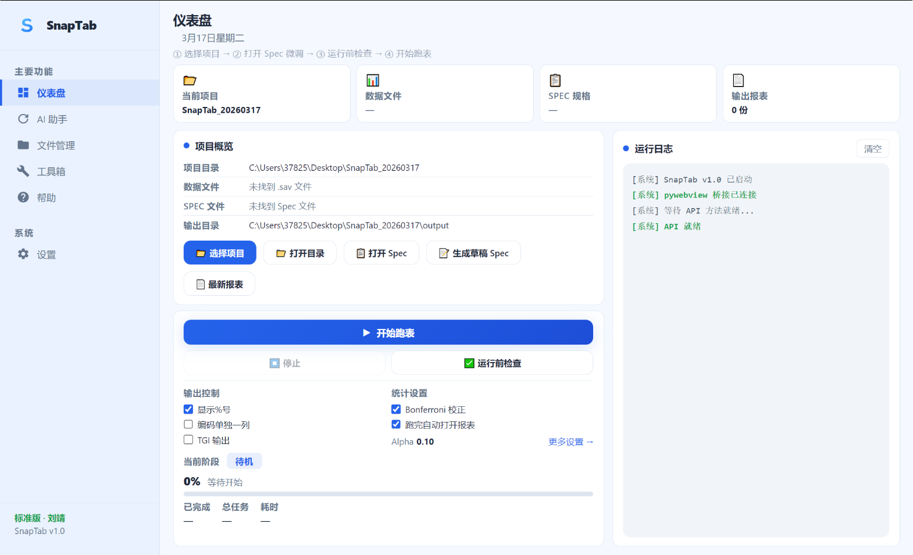

专为市场调研设计的桌面端自动化制表工具。深度支持 SPSS .sav 文件，AI 辅助生成 Tables 与 Header 规格，一键导出专业级 Excel 交叉表。
行业领先的技术，助力告别繁琐手工
深度兼容 SPSS .sav 格式，完整读取变量标签与数值标签，自动识别题型结构，直接用于制表。
AI 智能识别题目类型，自动匹配统计口径，自动完成交叉表规格设置（Banner/Stub），告别手动拖拽。
一键导出符合行业标准的 Excel 交叉表，自带显著性字母标记与专业排版格式，直接用于汇报或分析。
一句话生成 Header、AI 补全 Tables、智能质检、NET 自动分组
打开本地 .sav 数据文件，SnapTab 自动识别变量与数值标签。
AI 自动生成交叉表规格（Spec），包含题目分组与交叉维度定义，一键完成设置。
点击开始跑表，分钟内生成带显著性标记的专业 Excel 交叉表。
全流程可视化，一目了然
